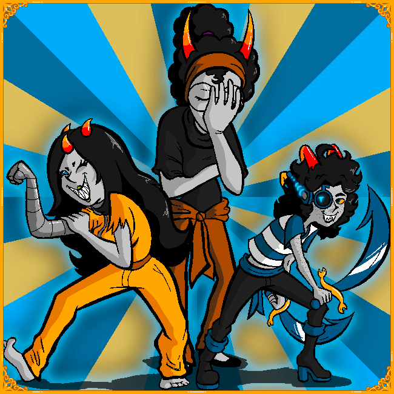
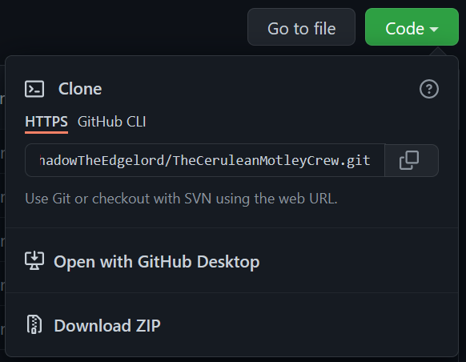
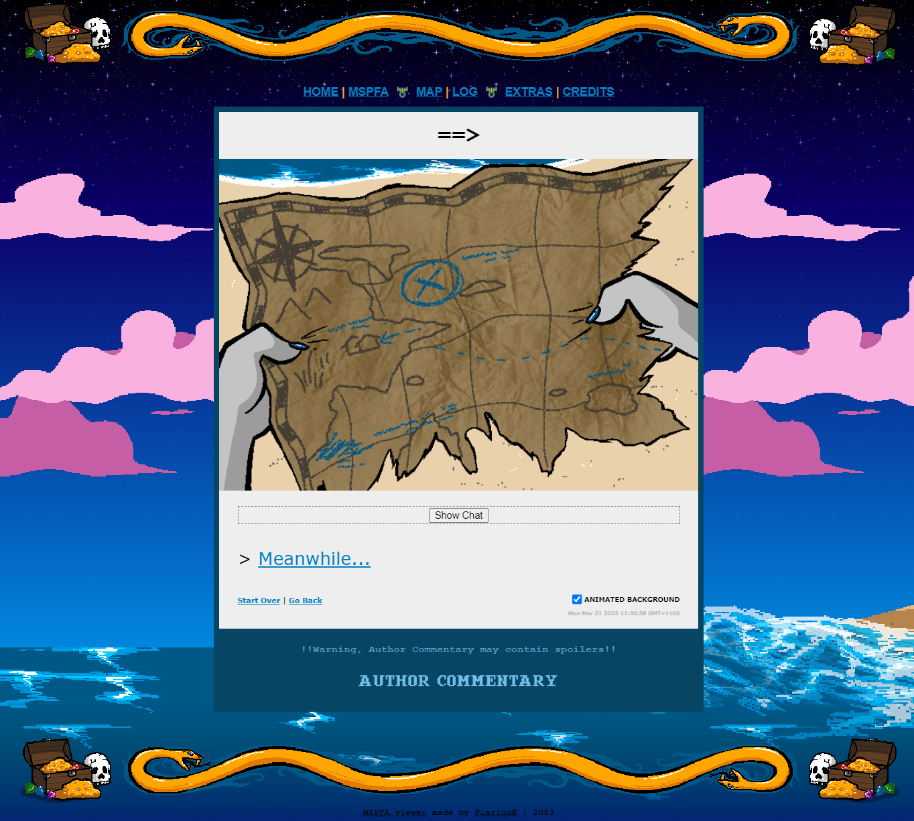

Don't like the ads on MSPFA? Wanna keep this absolutely stunning work of art all to yourself?
Just
like
data hoarding?
Don't worry I got you covered! Here is a To-Date archive of the entire
comic
plus
extras in the form of a neat GitHub link!
To download from GitHub, simply click "Code" then either "Open with GitHub Desktop" or "Download
Zip"
(Hell, even
both if
you wanna.) See image below.

This is, in fact, my working archive where I set up my pages before publishing them to
MSPFA!
You
will find all sorts of things like unused assets, raw PDFs, extra items and hidden bonuses. It
will
be
so
up to date, there will be panels in there before they're even published!
All links in the
archive
are offline (with few exceptions) and it is synced directly to my computer folder so it is never
out
of
date.
Here's a Hot Preview!

Please do respect my work as an artist and don't sell this, publish this as your own work
ect, ect. I'm offering this raw and free for anyone interested in saving this to a collection or
whatever
they have in mind as an alternative to downloading it a page at a time (I archived a 500+ page
comic
on
MSPFA for the author and hoo boy was it rough downloading one page at a time!)
OFFLINE
ARCHIVE

This archive is licensed under a Creative Commons Attribution-NonCommercial-ShareAlike 4.0 International License. Homestuck and relating themes are owned by Andrew Hussie & Viz Media.